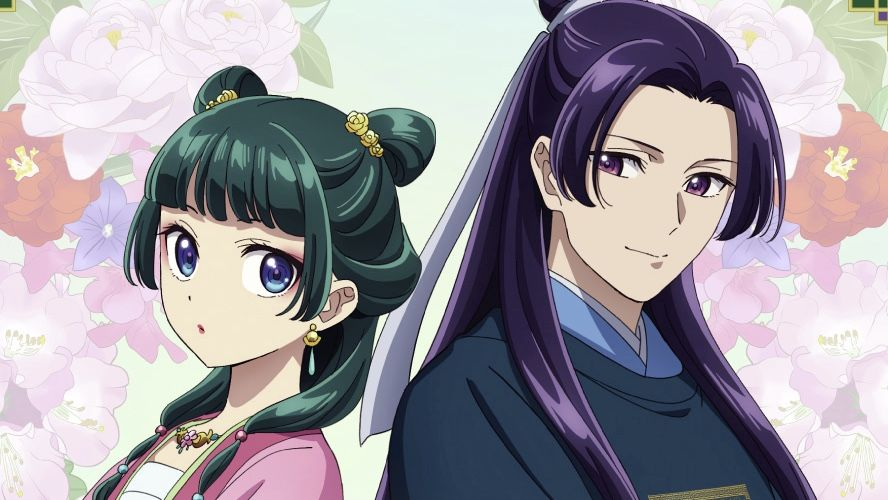
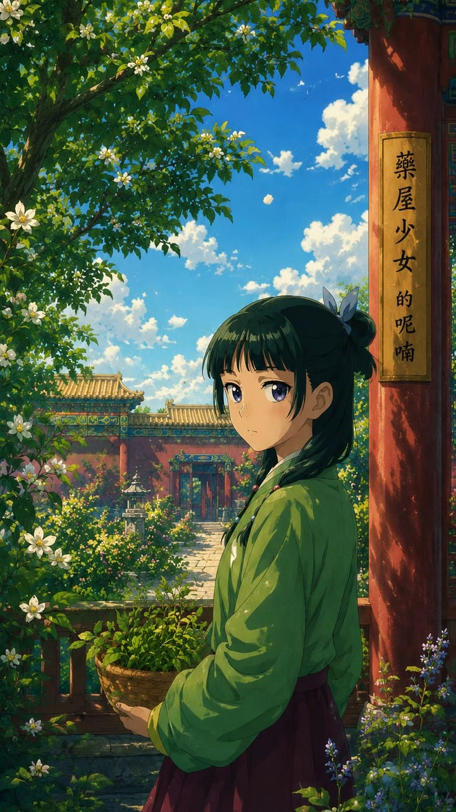
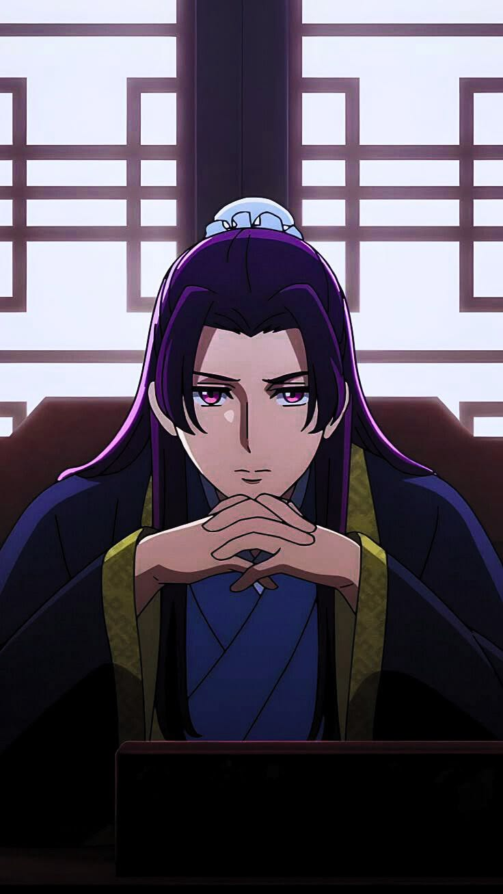

Maomao é a protagonista de The Apothecary Diaries. Extremamente inteligente e observadora, ela possui um vasto conhecimento sobre ervas medicinais, venenos e tratamentos, resultado dos anos que passou aprendendo com seu pai adotivo, um experiente boticário.
Sua personalidade é bastante diferente da de muitas protagonistas. Em vez de buscar fama ou reconhecimento, Maomao prefere manter uma vida tranquila e resolver problemas usando a lógica. Ela raramente demonstra suas emoções de forma intensa, mas está sempre analisando tudo ao seu redor, percebendo detalhes que passam despercebidos pelas outras pessoas.
Ao ser levada para trabalhar no palácio imperial, seu talento acaba chamando atenção. A partir desse momento, ela começa a solucionar diversos mistérios envolvendo doenças, tentativas de envenenamento e intrigas da corte. Sua capacidade de conectar pistas faz com que conquiste a confiança de pessoas importantes, mesmo sem desejar esse destaque.
Uma das características mais curiosas de Maomao é sua fascinação por venenos. Ela estuda seus efeitos com enorme interesse científico e, sempre que possível, busca aprender mais sobre substâncias perigosas para compreender como combatê-las. Essa curiosidade incomum rende várias cenas divertidas ao longo da história.
Apesar de parecer fria ou distante em alguns momentos, Maomao demonstra grande compaixão por quem realmente precisa de ajuda. Ela costuma colocar seu conhecimento a serviço dos outros, mostrando que sua inteligência é acompanhada de um forte senso de responsabilidade.

Jinshi é um dos personagens centrais de The Apothecary Diaries e uma das figuras mais influentes da corte imperial. Conhecido por sua beleza quase impecável e por sua postura elegante, ele chama a atenção de todos ao seu redor. No entanto, por trás da aparência refinada, esconde uma personalidade inteligente, estratégica e extremamente perspicaz.
Desde o primeiro encontro com Maomao, Jinshi percebe que ela é diferente das demais pessoas do palácio. Enquanto muitos se deixam levar por sua aparência e posição, Maomao o trata com naturalidade, sem demonstrar interesse ou admiração exagerada. Essa reação desperta sua curiosidade e faz com que ele passe a confiar cada vez mais nas habilidades da jovem boticária.
Jinshi costuma delegar a Maomao diversos casos envolvendo mistérios, doenças e acontecimentos incomuns dentro da corte. Ele reconhece seu talento para investigação e sabe que ela é capaz de encontrar respostas onde ninguém mais consegue. Ao longo da história, os dois desenvolvem uma relação marcada por provocações, respeito mútuo e momentos de grande cumplicidade.
Apesar de parecer sempre calmo e confiante, Jinshi também enfrenta responsabilidades e segredos que influenciam diretamente sua vida. Sua habilidade para lidar com assuntos políticos e sua capacidade de analisar pessoas demonstram que ele é muito mais do que apenas um belo rosto.
